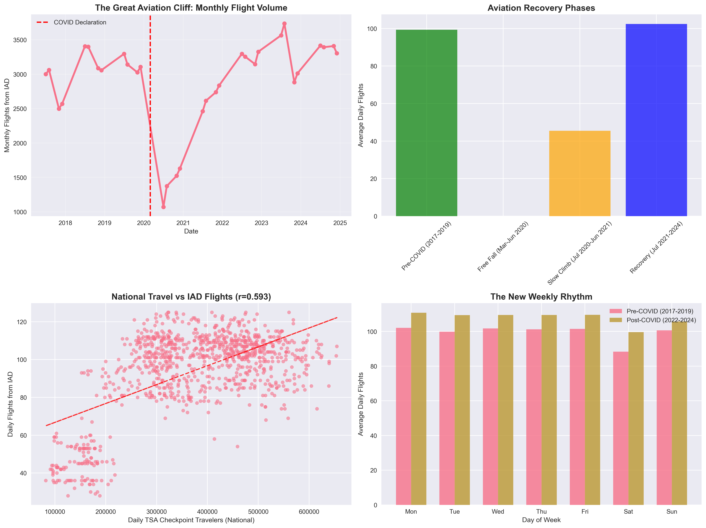
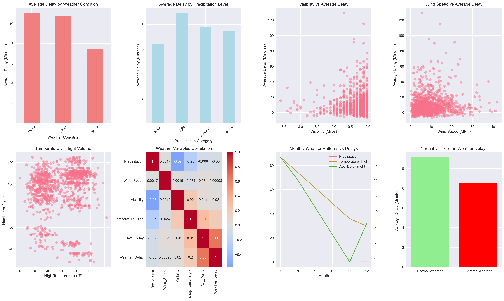
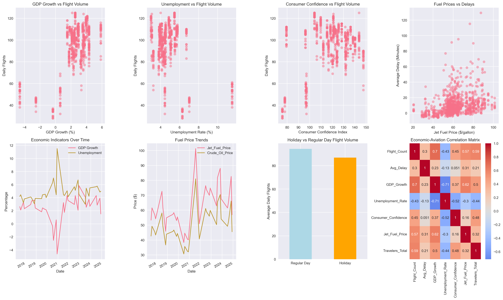
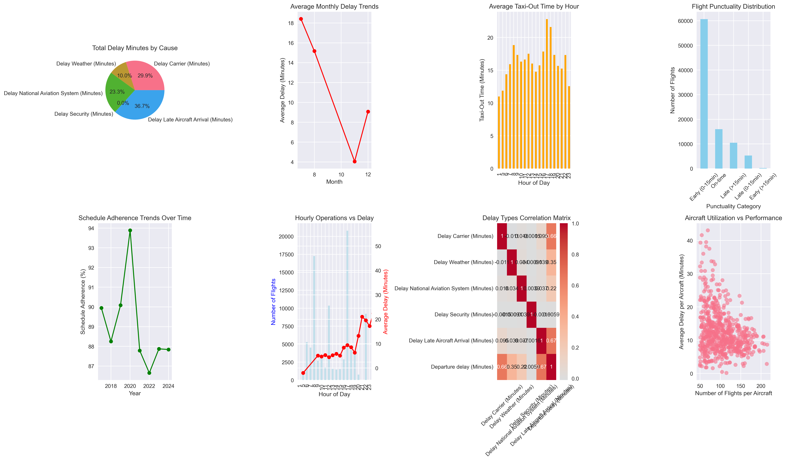
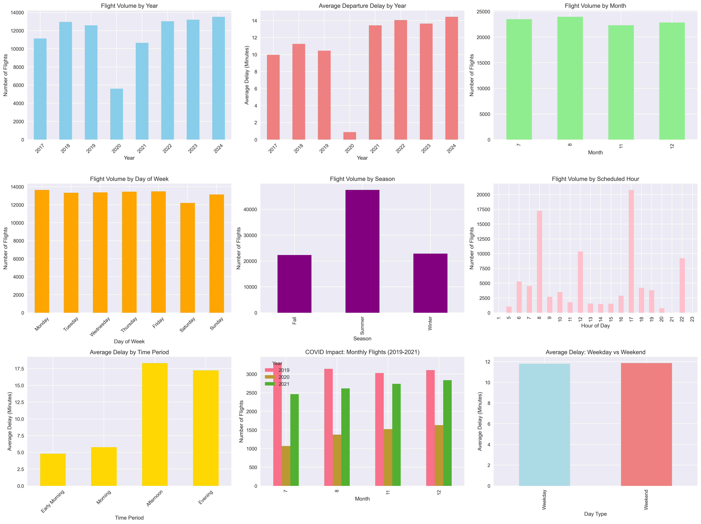

The Great Aviation Reset
How COVID-19 Fundamentally Changed Travel Patterns

Key Findings
- The Cliff Drop: March 2020 marked the beginning of aviation's most dramatic decline
- Recovery Phases: Four distinct recovery phases from free fall to full recovery
- New Normal: Travel patterns have fundamentally shifted with 108.4% recovery
- TSA Correlation: Strong correlation between national TSA numbers and IAD flights
54.2%
Maximum decline during COVID
108.4%
Current recovery level
Weather Impact Assessment
The Hidden Operational Costs of Mother Nature

Weather Insights
- Baseline Performance: Clear weather provides optimal operating conditions
- Seasonal Variations: Winter months show increased operational challenges
- Visibility Impact: Low visibility conditions significantly affect operations
- Wind Patterns: High winds create the most consistent delay patterns
10.8
Minutes clear weather baseline
Windy
Worst weather condition
Economic Sensitivity Analysis
IAD as a Real-Time Economic Barometer

Economic Relationships
- GDP Correlation: Strong positive relationship with economic growth
- Employment Impact: Inverse relationship with unemployment rates
- Consumer Confidence: Travel demand mirrors economic sentiment
- Fuel Price Sensitivity: Operational costs influence delay patterns
0.701
GDP correlation coefficient
-0.426
Unemployment correlation
The Operational Efficiency Paradox
More Flights, More Problems?

Efficiency Insights
- Volume-Delay Relationship: Positive correlation between traffic and delays
- Peak Period Penalty: 11.3-minute additional delay during busy periods
- Capacity Constraints: Evidence of infrastructure limitations
- Optimization Opportunities: Strategic scheduling can reduce congestion
11.3
Minutes congestion penalty
0.301
Volume-delay correlation
The Resilience Factor
IAD's Recovery and Adaptation Story

Resilience Metrics
- Rapid Recovery: Faster-than-expected return to normal operations
- Adaptation Success: New operational patterns established
- Seasonal Stability: Maintained consistent seasonal patterns
- Future Readiness: Infrastructure prepared for growth
108.4%
Recovery achievement
4.9%
Seasonal variation